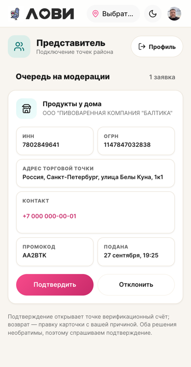

Замеры с живого экрана (390px) и сверка с нормативами дизайн-системы. Ниже — что было, что стало и что осталось.
| Метрика | Норма ДС | Было | Стало |
|---|---|---|---|
| Боковой гуттер экрана | 16 (--lv-pad-x) | 16 | 16 |
| Внутренний отступ карточки | 16 — по сетке экрана | 14 (сдвиг 2px) | 16 |
| Зазор внутри карточки | 16 (--lv-block-gap) | 12 | 16 |
| Радиус карточки | 16 (--lv-r-lg) | 16 | 16 |
| Радиус/отступ ячейки поля | 12 / 12 | 12 / 12 | 12 / 12 |
| Зазор сетки полей | 8 (½ block-gap) | 8 | 8 |
| Высота кнопок | ≥ 44 (тап-таргет) | 44 | 44 |
| Радиус кнопок | pill | pill | pill |
| Высота карточки заявки | сканируемость | 557px (6 полей стопкой) | 429px (пары + длинные на всю ширину) |
Карточка очереди весила 557px — почти две трети экрана на одну заявку. Сжал сетку полей: короткие реквизиты (ИНН/ОГРН, промокод/дата) — в две колонки, длинные (адрес, контакт) — на всю ширину. Стало 429px, при этом состав полей не изменился.
Заодно выровнял ритм: внутренний отступ карточки по сетке экрана (16) и зазор внутри карточки по токену --lv-block-gap (16).
